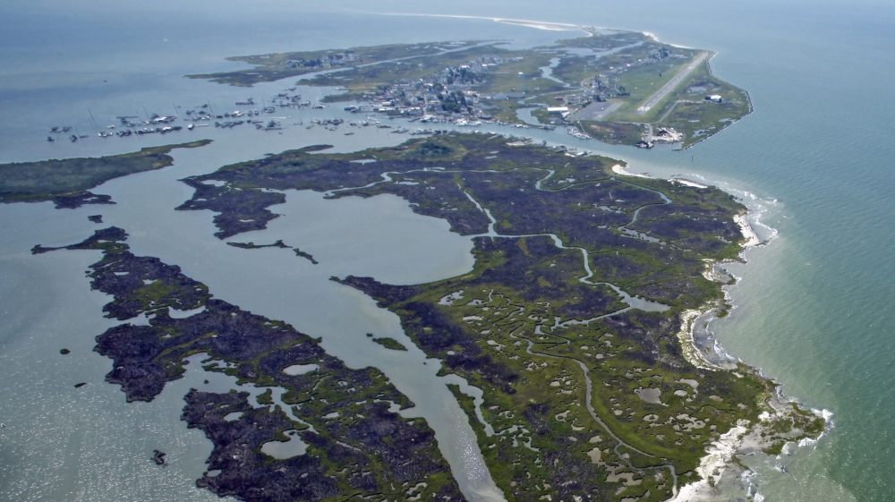

Up to 90 percent of the warming caused by human carbon emissions is absorbed by the world's oceans, scientists estimate. And researchers increasingly agree that the oceans are warming faster than previously thought.
Multiple studies in the past few years have found that previous estimates from the Intergovernmental Panel on Climate Change may be too low. A new review of the research, published yesterday in Science, concludes that "multiple lines of evidence from four independent groups thus now suggest a stronger observed [ocean heat content] warming." Taken together, the research suggests that the oceans are heating up about 40 percent faster than previously estimated by the IPCC. Since the 1950s, studies generally suggest that the oceans have been absorbing at least 10 times as much energy annually, measured in joules, as humans consume worldwide in a year.
While much of the human concern about climate change focuses on its effects over land-rising air temperatures, changes in weather patterns and so on-accurate estimates of ocean warming are deeply important to scientists' understanding of global warming. Determining how fast the oceans are warming helps scientists calculate how sensitive the planet is to greenhouse gas emissions and how quickly it may warm in the future."The ocean, in many ways, is the best thermometer we have for the planet," said Zeke Hausfather, a climate scientist at the University of California, Berkeley, and a co-author of the new analysis.
“Up to 90% of the warming caused by human carbon emissions is absorbed by the world's oceans”
Accelerated warming is also a big concern for ocean ecosystems, driving mass coral bleaching events all over the world and forcing some species to migrate to cooler waters. Warming also causes ocean water to expand in volume, which can contribute to sea-level rise.
For nearly two decades, scientists have used a network of floats distributed throughout the ocean to constantly monitor water temperatures worldwide. But before the early 2000s, when the network was launched, scientists mainly relied on measurements taken from passing ships as they made their way across the seas. This meant ocean temperature observations, worldwide, were sparser and that scientists had to use statistical methods or models to fill in the gaps. In recent years, improved data from the float network and improvements in the models and statistical tools used to analyze previous measurements have helped scientists develop more accurate reconstructions of ocean warming over the past century.
As the new review reports, multiple studies now agree that the oceans are warming at a faster rate than older estimates suggested. And these revised calculations also match up better with climate model simulations than previous estimates, giving scientists more confidence that model projections for the future are on track. And if the models are accurate, continuing to emit greenhouse gases at the current rate could result in dire consequences for the global oceans. As the new analysis points out, models suggest that a business-as-usual climate scenario could cause nearly 1.5 degrees of ocean warming-the equivalent of nearly a foot of sea-level rise by the end of the century. Meeting the Paris Agreement's climate goals, on the other hand, could cut that warming in half.
Scientists aren't only interested in how much heat the oceans are soaking up. How that heat moves around the planet can reveal important clues about how high the seas might rise in different locations, for instance.
Another study, published earlier this week in Proceedings of the National Academy of Sciences, also concluded that the oceans are taking up at least 90 percent of the excess heat in the atmosphere. It also found that they've been warming since at least the late 1800s, although its estimates for the rate of warming may be a bit lower than what some of the other recent studies have suggested.The study suggests that the oceans' large-scale currents and circulation patterns have been changing in recent decades-for reasons scientists are still investigating-and that these changes are affecting the places where ocean heat ends up.
The study suggests that up to half the extra heat stored up in the midlatitude regions of the Atlantic Ocean since the 1950s was actually transported there from other parts of the ocean. This means that heat-related sea-level rise in this part of the ocean is being influenced by changing circulation patterns. That's important to pay attention to, the researchers note, because future climate change may cause even bigger shifts in ocean currents, many of which are heavily influenced by winds and atmospheric patterns that may be affected by global warming. Monitoring these changes could help scientists predict which parts of the ocean will warm-and expand-the fastest in the future.
"Future changes in ocean transport could have severe consequences for regional sea-level rise and the risk of coastal flooding,"the authors write.
Global warming has an enormous impact with respect to melting glaciers and ice sheets, this is been well known. However a new connection between warming water and increasing wave power is being uncovered. Increased wave size and strength threatens our coast and those who live there.